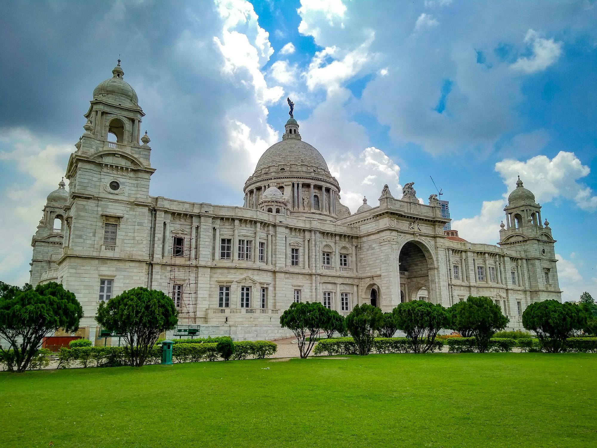

Beauty of Kolkata
Kolkata, the cultural capital of India, boasts colonial architecture, vibrant arts, and historic landmarks. Enjoy the grandeur of monuments, bustling streets, and serene riverbanks.
Famous Foods of Kolkata

Biriyani
Spicy kebabs wrapped in paratha, served with chutneys and vegetables.

Macher Jhol
Traditional Bengali fish curry with a blend of spices and herbs.
Rasgulla
Soft, spongy sweets soaked in sugar syrup, a classic Bengali dessert.
Chaat
Delicious street food with a mix of flavors and textures, including spicy, tangy, and sweet elements.
Sandesh
Light and creamy Bengali sweets made from fresh paneer and flavored with cardamom.
Sightseeing Places in Kolkata

Victoria Memorial
A stunning white marble monument dedicated to Queen Victoria, surrounded by beautiful gardens.

Howrah Bridge
An iconic cantilever bridge over the Hooghly River, a landmark of Kolkata.
Dakshineswar Temple
A historic Hindu temple known for its intricate architecture and spiritual significance.

Indian Museum
The oldest and largest museum in India, featuring extensive collections of art, archaeology, and natural history.
New Market
A bustling shopping area offering everything from clothes to local delicacies.